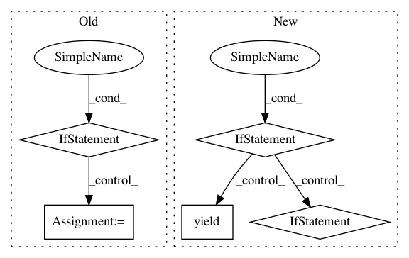

b649cc365040d9cd63631c763d1c485dfe981399,experiments/working_npmle.py,,create_turnball_intervals,#,32
Before Change
except:
break
if right_ == np.inf:
// find the last possible left_
left_ = heapq.nlargest(1, left)[0]
yield interval(left_, right_)
break
elif left__ < right_:
left_ = left__
elif right_ <= left__:
yield interval(left_, right_)
left_ = left__
right_ = heappop(right)
while right_ <= left_:
right_ = heappop(right)
else:
print("why am I here")
def is_subset(query_interval, super_interval):
return super_interval.left <= query_interval.left and query_interval.right <= super_interval.right
After Change
try:
// import pdb
// pdb.set_trace()
if left_ < right_:
left__ = heappop_(left)
while left__ < right_:
left_ = left__
left__ = heappop_(left)
yield interval(left_, right_)
left_ = left__
if left_ != right_:
right_ = heappop_(right)
else:
yield interval(left_, right_)
right_ = heappop_(right)
elif left_ > right_:
while right_ <= left_:
right_ = heappop_(right)
yield interval(left_, right_)
left_, right_ = heappop_(left), heappop_(right)
elif left_ == right_:
yield interval(left_, right_)
right_ = heappop_(right)
except IndexError:
yield interval(left_, right_)
break
In pattern: SUPERPATTERN
Frequency: 3
Non-data size: 5
Instances
Project Name: CamDavidsonPilon/lifelines
Commit Name: b649cc365040d9cd63631c763d1c485dfe981399
Time: 2020-05-11
Author: cam.davidson.pilon@gmail.com
File Name: experiments/working_npmle.py
Class Name:
Method Name: create_turnball_intervals
Project Name: explosion/thinc
Commit Name: cc53003029d11839c394a9544a1394b62721869d
Time: 2019-10-18
Author: honnibal+gh@gmail.com
File Name: thinc/extra/wrappers.py
Class Name: PyTorchWrapper
Method Name: use_params
Project Name: graphbrain/graphbrain
Commit Name: be9467b5faed0506bda9dcdf231cc9fae3954170
Time: 2020-06-16
Author: telmo@telmomenezes.net
File Name: graphbrain/agents/txt_parser.py
Class Name:
Method Name: paragraphs